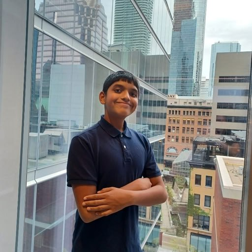

High school student building neural networks from scratch. Mostly focused on making loss curves go down efficiently.
Current work is mostly distributed training, making models stable, and figuring out what happens in the black box.
A data preprocessing method that stabilizes neural network training by normalizing input distributions. Demonstrated scaling from small to large problem sizes (5-qubit to 8-qubit quantum systems).
Side projects exploring systems, ML infrastructure, and developer tools.
Developer tool for visualizing LLM token perplexity, suggesting alternate generation paths.
Python backend generating Verilog from tinygrad compute graphs.
Autograd engine, math primitives, and neural network layers from scratch.
I am a Grade 10 student in Simcoe, Ontario. My research has been supported by mentorship from The Knowledge Society (TKS). I also work as a software engineer at 8090.inc.
My technical work is primarily in Python, using PyTorch for ML research and Emacs for everything else. I run Fedora with Sway as my daily driver.